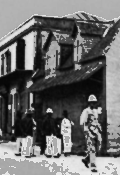

Du noir et blanc pour une île haute en couleurs
2003
← Séga, maloya, la musique et ses instruments
Accélération de la fonte des neiges sur le Piton de la Fournaise →
Tous les photographes vous le diront, les gens font plus de photos en été
qu'en hiver. Et bien puisque nous sommes en juillet (l'hiver à la Réunion)
je vais me permettre de parler photos. Nous avons déjà évoqué plusieurs fois des
photos pour découvrir l'île de la Réunion. Il y a des photographes qui
se sont fait une spécialité de la Réunion comme Serge Gélabert, déjà
présenté ici, Noor Akhoun ou bien Luc Reynaud, moins connu auteur de livres sur la randonnée. Il y a des amateurs qui en présentent sur leurs sites comme Serge de mi-aime-a-ou qui présente une galerie photos très complète de l'île (à voir absolument), ou comme Jeff Moyen qui présente ses photos de
voyage avec l'éruption de mars 2001.
Mais dans une île haute en couleurs il est des photos plus rares simplement
parce que la mode les escamote. Les photos en noir et blanc sont pourtant
leur intérêt même pour une île haute en couleur. Il y en a quelques unes
disponibles sur un site de pirates. Non, il ne s'agit pas de pirates
informatique qui sévissent sur Internet mais un interessant site sur les flibustiers, les racailles des mers et autres boucaniers... Les photos en noir et blanc sont des photos de la Réunion longtemps ; des vieilles vues
d'endroits qu'on connait mais autrement, en couleur. Bref, des photos qui changent de celles citées ci-dessus.
Le site de pirates qui était hébergé sur multimania, a disparu puis réaparu sur free avec une nouvelle mouture mais sans la galerie de photos noir et blanc. J'ai donc mis à jour les liens en archivant ce que je pouvait de l'ancienne page des photos noir & blanc.